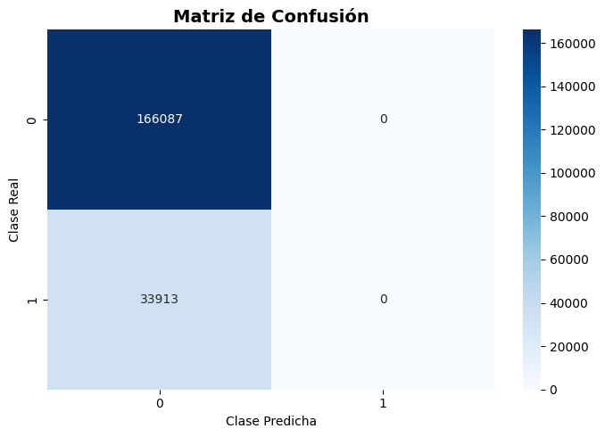
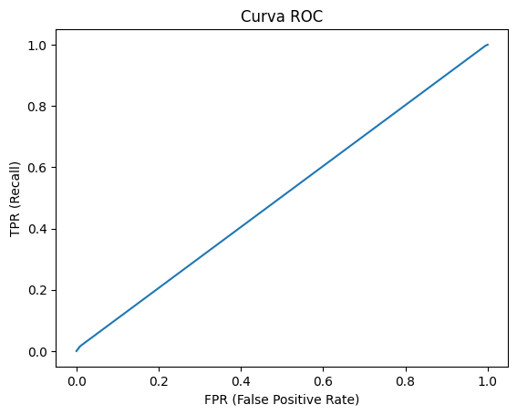
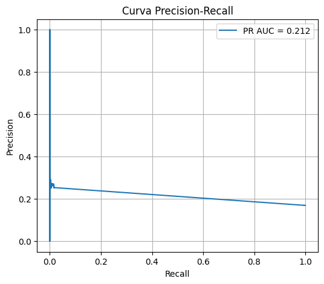
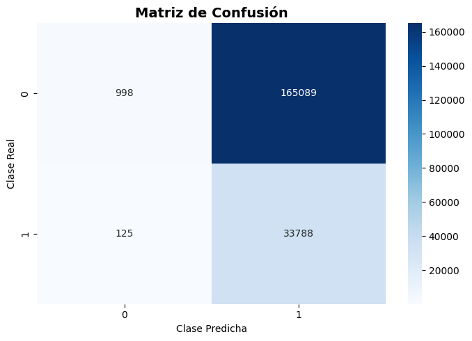
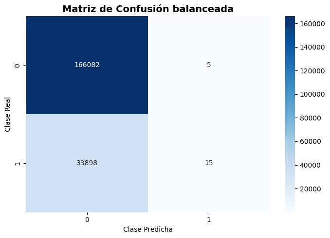
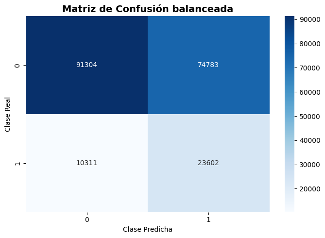
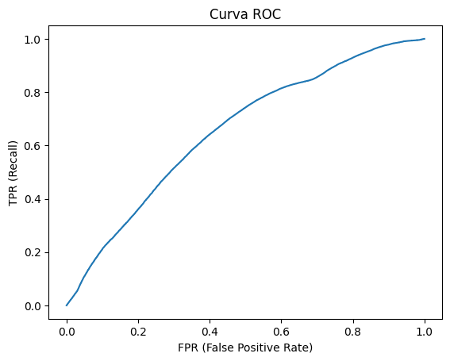
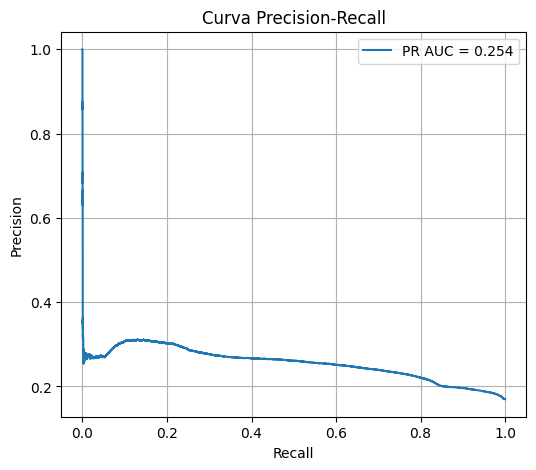

Modelado en Sklearn#
Librerias#
import pandas as pd
import matplotlib.pyplot as plt
import seaborn as sns
import numpy as np
import pyarrow.parquet as pq
from sklearn.model_selection import train_test_split
from category_encoders import TargetEncoder
from imblearn.pipeline import Pipeline as ImbPipeline
from sklearn.neural_network import MLPClassifier
from sklearn.compose import ColumnTransformer
from sklearn.preprocessing import OneHotEncoder, StandardScaler
from sklearn.model_selection import GridSearchCV
from sklearn.metrics import (
classification_report, accuracy_score,precision_score,recall_score,f1_score,
confusion_matrix, roc_curve, auc,roc_auc_score,average_precision_score,precision_recall_curve,
RocCurveDisplay
)
import time
import joblib
import warnings
warnings.filterwarnings("ignore")
Carga de datos#
se realiza la carga de los datos tomando una muestra representativa de 1 millon de datos y una subsample de las variables mas relevantes
cols = ["click","dia_semana","hora_del_dia","franja_horaria","device_type","device_conn_type","device_model","site_id","site_domain","app_domain","app_category","app_id","banner_pos","C1","C14","C18"]
chunks = []
for batch in pq.ParquetFile("../docs/datos_procesados.parquet").iter_batches(
batch_size=100_000, columns=cols):
chunks.append(batch.to_pandas())
df = pd.concat(chunks, ignore_index=True)
df["hour_sin"] = np.sin(2 * np.pi * df["hora_del_dia"] / 24)
df["hour_cos"] = np.cos(2 * np.pi * df["hora_del_dia"] / 24)
Split de datos#
realizamos el split entre train y test estratificado
df_sample = df.sample(n=1_000_000, random_state=0)
high_card_cols = [
"site_domain",
"app_domain",
"device_model",
"C14",
"C18"
]
low_card_cols = [
"app_category",
"banner_pos",
"device_type",
"device_conn_type",
"dia_semana",
"franja_horaria",
]
num_cols = [
"hour_sin",
"hour_cos",
]
all_features = high_card_cols + low_card_cols + num_cols
X = df_sample[all_features]
y = df_sample["click"]
X_train, X_test, y_train, y_test = train_test_split(
X, y,
test_size=0.2,
stratify=y,
random_state=0
)
print(f"Train: {X_train.shape} | Test: {X_test.shape}")
print(f"Balance train - click=1: {y_train.mean():.3f}")
print(f"Balance test - click=1: {y_test.mean():.3f}")
Train: (800000, 13) | Test: (200000, 13)
Balance train - click=1: 0.170
Balance test - click=1: 0.170
Creacion de pipelines#
Se crean pipelines para el preprocesamiento de datos
high_card_pipeline = ImbPipeline(steps=[
("target_encoder", TargetEncoder(smoothing=10))
])
low_card_pipeline = ImbPipeline(steps=[
("onehot", OneHotEncoder(drop="first", handle_unknown="ignore", sparse_output=False))
])
num_pipeline = ImbPipeline(steps=[
("scaler", StandardScaler())
])
preprocessor = ColumnTransformer(
transformers=[
("high_card", high_card_pipeline, high_card_cols),
("low_card", low_card_pipeline, low_card_cols),
("num", num_pipeline, num_cols),
],
remainder='drop'
)
pipeline = ImbPipeline(steps=[
("preprocessor", preprocessor),
("classifier", MLPClassifier(
hidden_layer_sizes=(256, 128),
activation='relu',
solver='adam',
learning_rate_init=0.001,
batch_size=2048,
max_iter=100,
validation_fraction=0.1,
n_iter_no_change=10,
random_state=0
))
])
Modelado benchmark#
Modelo inicial#
start=time.time()
benchmark=pipeline.fit(X_train, y_train)
end=time.time()
print(f"Tiempo estimado: {(end - start) / 60:.2f} minutos")
Tiempo estimado: 5.11 minutos
y_pred = benchmark.predict(X_test)
y_proba = benchmark.predict_proba(X_test)[:, 1]
print("Accuracy:", accuracy_score(y_test, y_pred))
print(classification_report(y_test, y_pred))
Accuracy: 0.830435
precision recall f1-score support
0 0.83 1.00 0.91 166087
1 0.00 0.00 0.00 33913
accuracy 0.83 200000
macro avg 0.42 0.50 0.45 200000
weighted avg 0.69 0.83 0.75 200000
podemos observar que hay bastante overfitting en la clase 0, con un porcentaje bastante alto de accuracy a pesar de que en la clase 1 esta todo en 0
print("ROC-AUC:", roc_auc_score(y_test, y_proba))
ROC-AUC: 0.5044170979599552
a pesar de que la clase 1 es 0, ROC AUC es igual a 0.5 por lo que no esta discriminando las clases de manera eficiente
precision, recall, thresholds = precision_recall_curve(y_test, y_proba)
clases = benchmark.classes_
n_clases = len(clases)
cm = confusion_matrix(y_test, y_pred)
plt.figure(figsize=(7, 5))
sns.heatmap(
cm,
annot=True,
fmt="d",
cmap="Blues",
xticklabels=clases,
yticklabels=clases
)
plt.title("Matriz de Confusión", fontsize=14, fontweight="bold")
plt.ylabel("Clase Real")
plt.xlabel("Clase Predicha")
plt.tight_layout()
plt.show()

Podemos observar que nunca predice la clase 1, la ignora completamente
en general esto evidencia el desbalanceo que tiene el dataset entre las clases 0 y 1, por lo que debemos realizar una clase de balanceo, sin embargo balanceos sinteticos tipo SMOTE no son aptos para este dataset de mayoria categorica y ademas class_weight balanced no existe en el modelo. Por este motivo, se procedió a ajustar el umbral de decisión maximizando f1 para de esta manera, realizar un balanceo en las 4 metricas principales
fpr, tpr, thresholds = roc_curve(y_test, y_proba)
plt.plot(fpr, tpr)
plt.xlabel("FPR (False Positive Rate)")
plt.ylabel("TPR (Recall)")
plt.title("Curva ROC")
plt.show()

# Calcular precision y recall para distintos thresholds
precision, recall, thresholds = precision_recall_curve(y_test, y_proba)
# Calcular PR-AUC
pr_auc = auc(recall, precision)
# Graficar
plt.figure(figsize=(6,5))
plt.plot(recall, precision, label=f'PR AUC = {pr_auc:.3f}')
plt.xlabel("Recall")
plt.ylabel("Precision")
plt.title("Curva Precision-Recall")
plt.legend()
plt.grid()
plt.show()

Modelo balanceado por threshold#
Encontramos un threshold que maximize f1_score
f1 = 2 * precision * recall / (precision + recall + 1e-8)
best_threshold = thresholds[np.argmax(f1)]
y_pred = (y_proba >= best_threshold).astype(int)
accuracy = accuracy_score(y_test, y_pred)
precision = precision_score(y_test, y_pred)
recall = recall_score(y_test, y_pred)
f1 = f1_score(y_test, y_pred)
cm = confusion_matrix(y_test, y_pred)
print("Accuracy: ",accuracy)
print("Precision: ",precision)
print("Recall",recall)
print("F1_score:",f1)
Accuracy: 0.17393
Precision: 0.16989395455482534
Recall 0.9963140978385869
F1_score: 0.2902873834786718
print(classification_report(y_test,y_pred))
precision recall f1-score support
0 0.89 0.01 0.01 166087
1 0.17 1.00 0.29 33913
accuracy 0.17 200000
macro avg 0.53 0.50 0.15 200000
weighted avg 0.77 0.17 0.06 200000
podemos observar que incluso realizando el cambio del ajuste del umbral, el recall mantiene un overffiting notable, a pesar de que puede ahora si predecir la clase 1
plt.figure(figsize=(7, 5))
sns.heatmap(
cm,
annot=True,
fmt="d",
cmap="Blues",
xticklabels=clases,
yticklabels=clases
)
plt.title("Matriz de Confusión", fontsize=14, fontweight="bold")
plt.ylabel("Clase Real")
plt.xlabel("Clase Predicha")
plt.tight_layout()
plt.show()

Podemos observar que al cambiar el threshold de 0.5 en el problema, el modelo captura mucho mejor la clase 1, pero al coste de no predecir bien la clase 0. La busqueda de hiperparametros puede facilitar este problema
Gridsearch#
Se realiza un gridsearch, modificando los paramteros de hidden layers, alpha y max iter para determinar cual esla combinacion que genera mejores resultados para el modelo
Entrenamiento de Gridsearch#
param_grid = {
"classifier__hidden_layer_sizes": [
(128, 64),
(256, 128),
(512, 256, 128),
],
"classifier__alpha": [1e-4, 1e-2],
"classifier__max_iter": [50, 100]
}
pipeline = ImbPipeline(steps=[
("preprocessor", preprocessor),
("classifier", MLPClassifier(
hidden_layer_sizes=(256, 128),
activation='relu',
solver='adam',
learning_rate_init=0.001,
batch_size=2048,
max_iter=100,
validation_fraction=0.1,
n_iter_no_change=10,
random_state=0
))
])
grid = GridSearchCV(
estimator=pipeline,
param_grid=param_grid,
scoring="roc_auc",
cv=3
)
start_train = time.time()
grid.fit(X_train, y_train)
end_train = time.time()
train_time = end_train - start_train
print(f"Tiempo total de entrenamiento (GridSearch): {train_time/ 60:.2f} minutos")
Tiempo total de entrenamiento (GridSearch): 119.42 minutos
print("Mejores parámetros:")
print(grid.best_params_)
print("Mejor ROC-AUC (CV):")
print(grid.best_score_)
Mejores parámetros:
{'classifier__alpha': 0.0001, 'classifier__hidden_layer_sizes': (128, 64), 'classifier__max_iter': 100}
Mejor ROC-AUC (CV):
0.6461374242189871
Evaluacion de mejor modelo#
se realiza la evaluacion del modelo con todas las metricas disponibles
best_model = grid.best_estimator_
start_evaluate = time.time()
# Probabilidades
y_proba_grid = best_model.predict_proba(X_test)[:, 1]
# Predicción con threshold estándar
y_pred_05 = (y_proba_grid >= 0.5).astype(int)
end_evaluate = time.time()
print(f"Tiempo estimado: {(end_evaluate - start_evaluate) / 60:.2f} minutos")
print("ROC-AUC:", roc_auc_score(y_test, y_proba_grid))
print("Accuracy:", accuracy_score(y_test, y_pred_05))
print("Precision:", precision_score(y_test, y_pred_05))
print("Recall:", recall_score(y_test, y_pred_05))
print("F1:", f1_score(y_test, y_pred_05))
print("\nMatriz de confusión:")
print(confusion_matrix(y_test, y_pred_05))
print(classification_report(y_test,y_pred_05))
Tiempo estimado: 0.01 minutos
ROC-AUC: 0.6562677146927469
Accuracy: 0.830485
Precision: 0.75
Recall: 0.0004423082593695633
F1: 0.0008840951286358412
Matriz de confusión:
[[166082 5]
[ 33898 15]]
precision recall f1-score support
0 0.83 1.00 0.91 166087
1 0.75 0.00 0.00 33913
accuracy 0.83 200000
macro avg 0.79 0.50 0.45 200000
weighted avg 0.82 0.83 0.75 200000
cm_grid = confusion_matrix(y_test, y_pred_05)
plt.figure(figsize=(7, 5))
sns.heatmap(
cm_grid,
annot=True,
fmt="d",
cmap="Blues",
xticklabels=clases,
yticklabels=clases
)
plt.title("Matriz de Confusión balanceada", fontsize=14, fontweight="bold")
plt.ylabel("Clase Real")
plt.xlabel("Clase Predicha")
plt.tight_layout()
plt.show()

podemos observar que no se detecta la clase en las metricas usuales a pesar de tener mejores hiperparametros, por lo que se balanceara con el uso de el ajuste del umbral de decision
precision, recall, thresholds = precision_recall_curve(
y_test, y_proba_grid
)
f1 = 2 * precision * recall / (precision + recall + 1e-8)
best_threshold = thresholds[f1.argmax()]
y_pred_grid = (y_proba_grid >= best_threshold).astype(int)
print("Accuracy:", accuracy_score(y_test, y_pred_grid))
print("Precision:", precision_score(y_test, y_pred_grid))
print("Recall:", recall_score(y_test, y_pred_grid))
print("F1:", f1_score(y_test, y_pred_grid))
print("\nMatriz de confusión:")
print(confusion_matrix(y_test, y_pred_grid))
print(classification_report(y_test,y_pred_grid))
Accuracy: 0.57453
Precision: 0.23989429282919145
Recall: 0.6959573025093622
F1: 0.3568005563198235
Matriz de confusión:
[[91304 74783]
[10311 23602]]
precision recall f1-score support
0 0.90 0.55 0.68 166087
1 0.24 0.70 0.36 33913
accuracy 0.57 200000
macro avg 0.57 0.62 0.52 200000
weighted avg 0.79 0.57 0.63 200000
Podemos observar que con el cambio del umbral de decision el modelo es mas eficiente a identificar ambas clases
cm_balanceado = confusion_matrix(y_test, y_pred_grid)
plt.figure(figsize=(7, 5))
sns.heatmap(
cm_balanceado,
annot=True,
fmt="d",
cmap="Blues",
xticklabels=clases,
yticklabels=clases
)
plt.title("Matriz de Confusión balanceada", fontsize=14, fontweight="bold")
plt.ylabel("Clase Real")
plt.xlabel("Clase Predicha")
plt.tight_layout()
plt.show()

podemos observar que el modelo puede predecir de mejor manera la clase 1 y con la clase 0, a pesar de eso hubo un aumento de los falsos positivos.
fpr, tpr, thresholds = roc_curve(y_test, y_proba_grid)
plt.plot(fpr, tpr)
plt.xlabel("FPR (False Positive Rate)")
plt.ylabel("TPR (Recall)")
plt.title("Curva ROC")
plt.show()

Podemos observar que la curva ROC ya no es una linea recta, y tiene un valor mayor a 0.6, por lo que discrimina mejor las clases en este caso
# Calcular precision y recall para distintos thresholds
precision, recall, thresholds = precision_recall_curve(y_test, y_proba_grid)
# Calcular PR-AUC
pr_auc = auc(recall, precision)
# Graficar
plt.figure(figsize=(6,5))
plt.plot(recall, precision, label=f'PR AUC = {pr_auc:.3f}')
plt.xlabel("Recall")
plt.ylabel("Precision")
plt.title("Curva Precision-Recall")
plt.legend()
plt.grid()
plt.show()

El ajuste del threshold permitió transformar un modelo inicialmente conservador e incapaz de detectar la clase minoritaria (recall ≈ 0) en un clasificador funcional, capaz de identificar aproximadamente el 70% de los casos positivos. Aunque esto incrementó los falsos positivos, el F1-score mejoró sustancialmente, lo cual es consistente con el comportamiento observado en la curva Precision–Recall y resulta más apropiado para un escenario altamente desbalanceado.